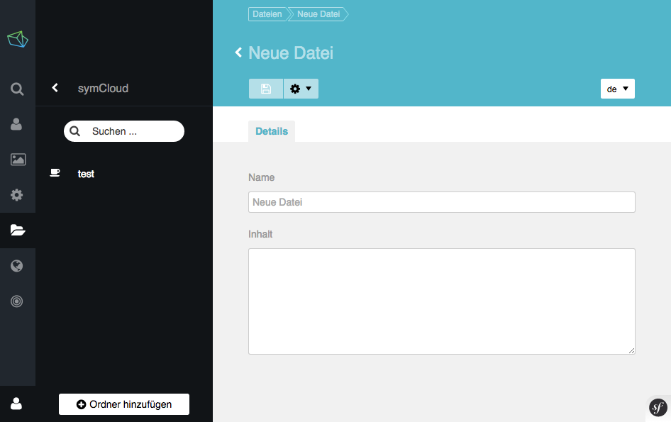
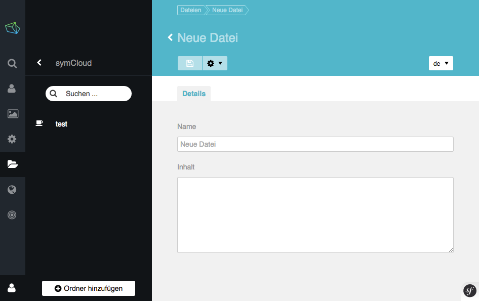

- Einführung
- Resultate
- Implementierung
- Herausforderungen und Fazit
Ziele
- Konzept für Datenhaltung
- Prototyp
Anforderungen
- Datensicherheit
- Filehosting und -sharing Funktionalitäten
- Architektur
Evaluierung
- Verteilte Daten - Diaspora
- Verteilte Datenmodelle - GIT
- Objekt Speicherdienste - Amazon S3
- Verteilte Dateisysteme - NFS und XtreemFS
- Datenbankgestützte Dateiverwaltung - GridFS
Technologien

Bibliothek - “distributed storage”

Synchronisierung - “jibe”

Fazit und Herausforderungen
Herausforderungen
- Immutable - unveränderbare Objekte
- Performance Verteilungsprotokoll


 
